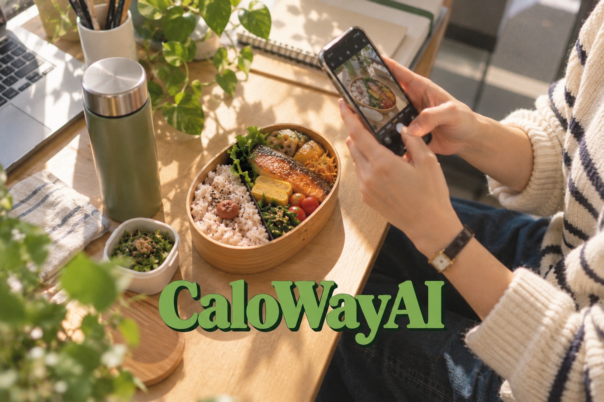

写真から、食事を記録。
料理の写真から、AIがカロリーとPFC（たんぱく質・脂質・炭水化物）を推定。結果を確認・調整して記録できます。
会員さんは、いつもの食事をCaloWayで記録。
トレーナーには、日々の記録をまとめたAIレポートを。
パーソナルジムの食事・歩数・体重の管理を支える
CaloWay Coach〈仮称〉を企画しています。
匿名回答OK・お申し込みではありません。
機能・料金は検討段階です。ご意見を開発に反映します。

ABOUT CALOWAY AI
CaloWay AIは、毎日の食事・体重・歩数を記録する個人向けアプリです。
ジムに通っている方も、そうでない方も、自分のペースで健康管理を続けられます。
料理の写真から、AIがカロリーとPFC（たんぱく質・脂質・炭水化物）を推定。結果を確認・調整して記録できます。
食事の履歴や体重の変化、連携した歩数を確認。日々の記録を振り返るきっかけをつくります。
レトロゲーム風のキャラクターと一緒に、毎日の記録を。シンプルな操作で、無理なく続けられることを目指しています。
AIのカロリー・栄養情報は推定値です。
このページで紹介するトレーナー向け機能は企画中で、個人向けアプリとは提供状況が異なります。
01 / WHAT WE ARE PLANNING
Aさんの、今週の振り返り。
前回決めた「朝食を週3回記録する」を確認できました。
週末は記録がなく、食事内容は判断できません。
開発前の内容イメージです。実際の管理画面ではありません。
写真の確認、数字の整理、前回のメモの読み返し。その準備を支え、会員さんとの会話に役立つサービスを目指します。
本人が許可した食事写真・カロリー・PFC・体重を、担当する会員ごとに確認。写真を送り直す手間を減らす設計です。
記録の状況、前回からの変化、確認したいことを要約。推定値と不明な情報を分け、元の記録に戻って確認できる機能を検討しています。
前回決めた目標や確認事項を引き継ぎ、会員向けの振り返り文案を作成。内容をトレーナーが確認して共有する想定です。
上記はすべて企画中の機能です。歩数などの追加連携もご要望を調査します。現在のアプリから記録が自動共有されることはありません。
02 / KEEP IT PERSONAL
個人向けCaloWayは、ジムに通っていなくても気軽に使える設計を維持。希望する方だけがトレーナーとつながる構想です。
食事を撮り、体重を記録。個人のアカウントと記録は、本人のものとして使い続けられます。
招待コードなどから連携。共有先・項目・期間を本人が選び、共有を停止できる設計を検討中です。
AIは記録の整理を補助し、目標や指導はトレーナーが判断。Webの専用画面から利用する想定です。
03 / PLANNED PRICING
全プランで基本機能は共通。管理する会員数に合わせて選べる構想です。以下は需要調査のための予定価格で、現時点での申込・契約・課金は行っていません。
予定プラン / FREE
無料 月額0円
管理できる会員数 5人まで
予定プラン / STANDARD
¥4,980 / 月（税込）
管理できる会員数 30人まで
予定プラン / PRO
¥9,800 / 月（税込）
管理できる会員数 100人まで
すべて企画中の機能・税込の予定価格です。価格・機能・提供時期は変更する可能性があります。スタッフ数・店舗数の上限などの詳細は、正式提供前に明示します。
04 / BEFORE YOU ANSWER
トレーナー向けサービスは企画中です。このページは需要調査を目的としており、申込・予約・契約ではありません。個人向けCaloWay AIは提供中です。
はい。個人・オンラインで指導している方や、食事・歩数・体重の管理をこれから検討する方のご意見も募集しています。
連絡先の記入と今後の連絡への同意は任意です。同意された範囲でのみ、追加ヒアリングやサービス案内・導入のご相談をご連絡します。匿名でも回答できます。
サービスの需要、優先する機能、料金の検討に使います。個人や店舗を特定できる回答を公開することはありません。会員さんの個人情報や健康情報は入力しないでください。
LET’S BUILD IT TOGETHER
どんなジムを運営していますか。日々、何に困っていますか。
「使わないと思う」というご意見も、開発の大切な判断材料です。